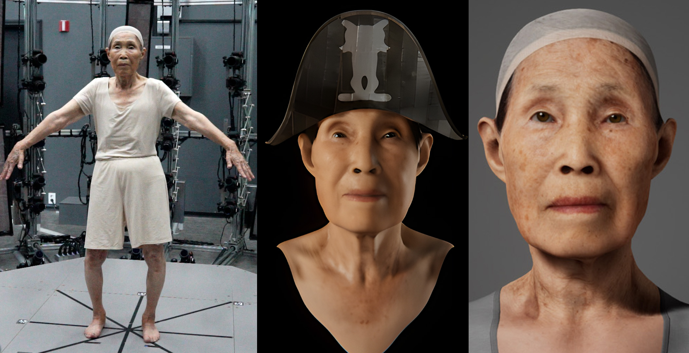
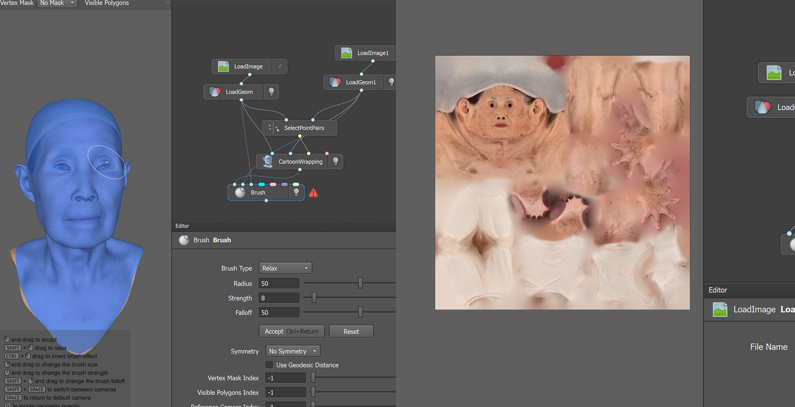
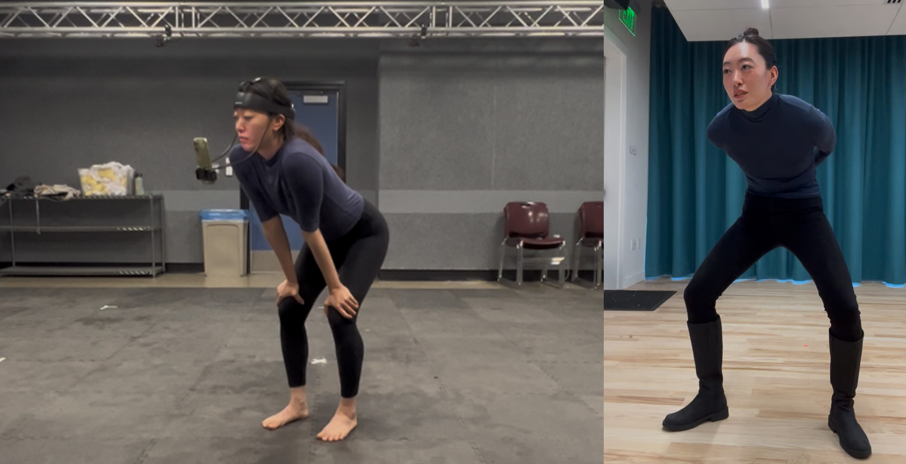
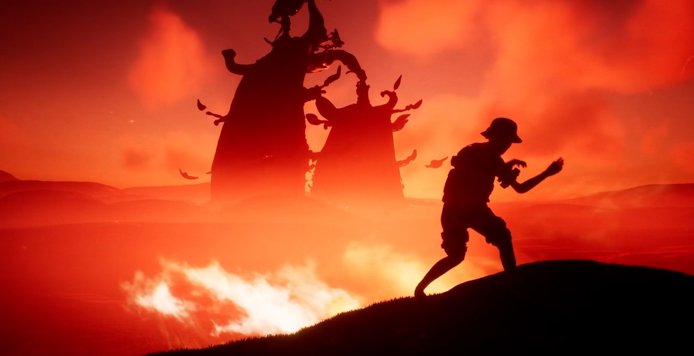
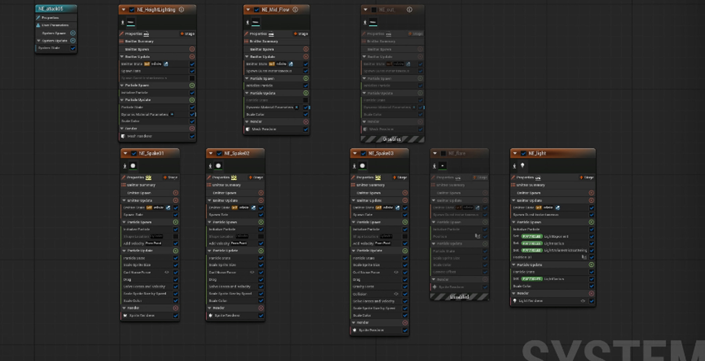
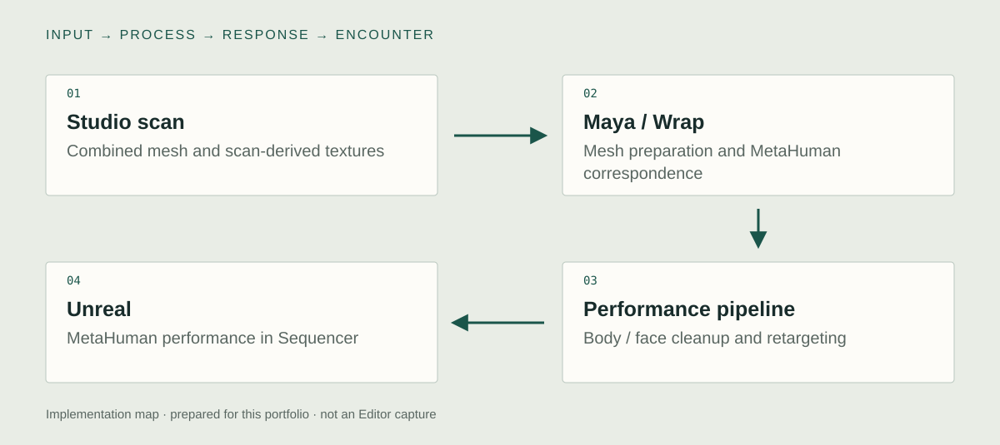

Unreal implementation
Scan → Wrap → MetaHuman
I extracted and prepared geometry from the studio’s combined face-and-body scan, then rebuilt the production character with Wrap and MetaHuman-compatible topology. Scan-derived textures preserved age and surface detail through the topology change. I corrected eye placement and look development in Unreal.

Body & facial performance
I worked across OptiTrack body capture, supplemental hand material, and separately recorded iPhone facial performance. MotionBuilder and Maya were used to clean and repair the body motion before retargeting. Different capture streams could then contribute to one assembled performance.
Unreal performance assembly
I retargeted the cleaned motion and aligned body and facial takes in Unreal Sequencer. The production output is an animated MetaHuman in Unreal. The initial Unity build established feasibility; its loss of likeness prompted the production rebuild rather than becoming the final character.


Jooan · VR extension
I brought Shininho's finished character and performance into Jooan's Unreal VR environment. A viewer can look around the scene, so I adjusted camera motion, used dusk lighting to guide attention, and developed hand-attached Niagara ribbon trails for the spatial performance.
The VR work extends the production MetaHuman; the earlier Unity character was a feasibility prototype. The original project archive documents the camera-comfort revisions, lighting, and Niagara setup.
Jooan VR performance


System & design decisions

- 01Studio scan
Combined mesh and scan-derived textures
- 02Maya / Wrap
Mesh preparation and MetaHuman correspondence
- 03Performance pipeline
Body / face cleanup and retargeting
- 04Unreal
MetaHuman performance in Sequencer
A useful prototype failure
The Unity feasibility build tested rigging, textures, real-time hair, and animation playback. The simplified character moved, but lost too much of the subject’s likeness. I returned to the original high-resolution scan and changed the production pipeline.
Identity through a topology change
Wrap correspondence transferred the source to MetaHuman-compatible geometry. I carried scan-derived surface information through the rebuild and corrected eye placement in Unreal. The subject’s recognizable face remained the reference for the work.
A performed result from separate capture streams
Body motion passed through MotionBuilder and Maya cleanup before Unreal retargeting. Separately captured facial performance was aligned with the body in Sequencer. Capture, correction, retargeting, and final assembly each served a distinct task.
Engine scope
Unity was used for the initial feasibility character. The production MetaHuman and assembled performance use Unreal. The later Jooan VR extension is documented in the original technical archive.
Concept
Which details must survive a real-time character pipeline for a representation to remain recognizable as a particular person?
Shininho is part of Yaloo’s wider exhibition and performance work. The first technical question was whether a combined face-and-body scan could become an animated real-time character. Once that worked, likeness became the more demanding production constraint. The pipeline was revised around the source face, age detail, texture, eyes, and performed gesture. A later Jooan VR extension reused the character in a different spatial presentation.
Collaboration: Collaboration with media artist Yaloo. Volumetric scanning was performed by an external studio; my contribution begins with processing the delivered scan and building the character and performance pipeline.
Development
Retrospective planning notes, prepared for this portfolio.
Test the complete character
Use the delivered scan to test rigging, surface transfer, hair, and moving playback before committing to the production path.
Revise the success criterion
Compare the working prototype with the source person. When recognizability is lost, return to source data rather than polishing an unsuitable mesh.
Assemble one controlled performance
Prepare body and facial takes, correct the motion, and review the synchronized result on the production character.
Further research
How do scan-derived facial details and performed gesture contribute to recognizing a particular digital person?
Vary: One representation factor at a time: surface detail or performance timing.
Hold consistent: The character identity, camera, lighting, motion content, and presentation duration.
Proposed comparison. No controlled study or measured effect is reported.